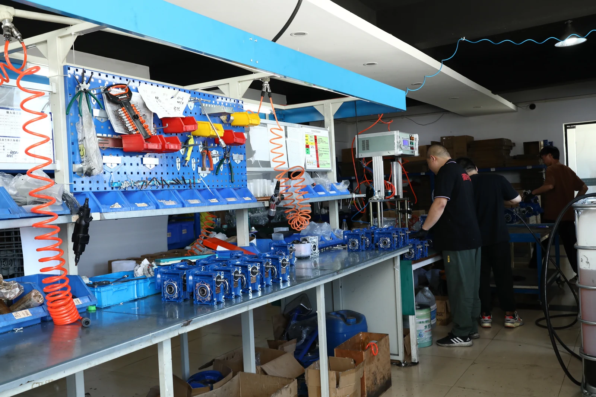

High Precision Planetary Gearboxes
Quick selection: choose PAB or PPG for an inline layout, or PABR where a right-angle layout is required. Then confirm the motor adaptor, ratio, required torque, backlash class, output interface and operating duty against the selected drawing.
Selection Priorities
Use the gearbox ratio to target the required output speed, then verify continuous and peak torque, the preferred backlash class, motor-adaptor dimensions, output shaft or flange, mounting arrangement and duty cycle. The published ranges are family references; the final configuration must be checked against the selected model and drawing.
For wider drive-system planning, browse the full SMK gearbox and motor range. When a separate industrial motor is required outside a servo package, review the electric motor range. Send the motor drawing and application details through the technical inquiry channel for configuration review.
Components
1. Gearbox Housing & Flange: Aluminum-alloy die casting ADC12.
2. Gearset: Precision planetary gear set. Ring gears: 40Cr. Planetary gears: 20CrMnTi, surface hardness HRC58–62, inner hardness HRC33–40.
3. Input Configurations: Keyed hollow shaft with motor adaptor.
4. Output Configurations: Keyed solid shaft output; keyless solid shaft output.
5. Applicable Motors: Servo motors and stepper motors.
Models
PAB / PABR Series, PPG Series.
Features
- Full inline and right-angle precision planetary gearbox range.
- High precision, high dynamic performance and low backlash.
- Optional ultra-precision, high-precision and standard-backlash configurations.
- Suitable for precision industrial automation and servo applications.
Parameters
| Series | Stage | Models | Ratio | Rated Torque | Output Flange Dia. | Output Shaft Dia. | Backlash | Efficiency |
|---|---|---|---|---|---|---|---|---|
| PAB (Inline) | 1 | PAB042, PAB060, PAB090, PAB115, PAB142, PAB180, PAB220 | 3, 4, 5, 6, 7, 8, 9, 10 | 14–2000 N·m | 42–220 mm | Φ13, Φ16, Φ22, Φ32, Φ40, Φ55, Φ75 | ≤1, ≤3, ≤5 arcmin | ≥97% |
| 2 | PAB042, PAB060, PAB060A, PAB090, PAB090A, PAB115, PAB142, PAB180, PAB220 | 15–100 | 14–2000 N·m | 42–220 mm | Φ13–Φ75 | ≤3, ≤5, ≤7 arcmin | ≥94% | |
| PABR (Right Angle) | 1 | PABR042, PABR060, PABR090, PABR115, PABR142, PABR180, PABR220 | 3, 4, 5, 6, 7, 8, 9, 10, 14, 20 | 9–2000 N·m | 42–220 mm | Φ13–Φ75 | ≤2, ≤4, ≤6 arcmin | ≥95% |
| 2 | PABR042, PABR060, PABR090, PABR115, PABR142, PABR180, PABR220 | 15–200 | 14–2000 N·m | 42–220 mm | Φ13–Φ75 | ≤4, ≤7, ≤9 arcmin | ≥92% | |
| PPG (Inline) | 1 | PPG040, PPG060, PPG080, PPG080A, PPG120, PPG120A, PPG160 | 3, 4, 5, 7, 10 | 9–423 N·m | — | Φ10, Φ14, Φ20, Φ25, Φ40 | ≤6, ≤8 arcmin | ≥97% |
| 2 | PPG040, PPG060, PPG080, PPG080A, PPG120, PPG120A, PPG160 | 15, 16, 20, 25, 30, 35, 40, 50, 70, 100 | 9–423 N·m | — | Φ10, Φ14, Φ20, Φ25, Φ40 | ≤8, ≤10 arcmin | ≥94% |
Applications
Precision industrial automation and servo applications.
Lubrication
PAB/PABR Series: Synthetic Grease (NYOGEL 792D).
PPG Series: Castrol LMX Grease.
Selection limitation: Do not select only by series, ratio or a maximum value shown in the table. Motor compatibility, duty, actual torque, backlash, mounting and output interface need configuration-specific confirmation. Pricing, availability, minimum order quantity and delivery time are confirmed only for an actual request.

Manufacturing and Technical Support
SMK manufactures and assembles industrial gearboxes, gear motors and electric motors in Jiangsu, China. Buyers can review the factory workflow, workshop photographs and packing preparation, then provide the required configuration for technical review.
For project qualification requirements, see the available quality and compliance documentation support.
Share the motor model, ratio, torque, backlash requirement, output interface and application. SMK will review the requested configuration.
Planetary Gearbox FAQ
Which series is suitable for an inline servo motor?
PAB and PPG are inline series. Final selection requires the required ratio, torque, backlash, motor adaptor and output-interface details.
When should I consider a right-angle planetary gearbox?
PABR is the right-angle series. It can be considered where the machine layout needs a 90-degree drive arrangement; confirm the selected configuration before ordering.
What should I include in a technical inquiry?
Provide the motor make and model, required ratio, running and peak torque, duty cycle, mounting arrangement, output interface and application details. A drawing or nameplate photograph is also useful where available.